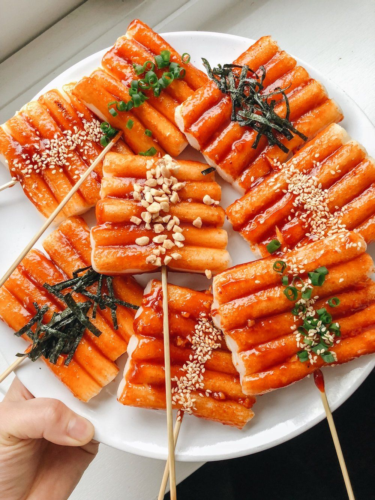

Asal Usul

Tteokbokki adalah camilan dari Korea yang terbuat dari tepung beras dan dimasak dalam saus gochujang
pedas. Tepung
beras yang dipakai berbentuk bulat batang yang memanjang. Makanan ini juga termasuk dalam makanan
internasional.
Pada mulanya, Tteokbokki hanya diperuntukkan bagi kalangan keluarga raja dan sebagai salah satu
sarana
penyembuhan. Merunut dari sejarah kemunculannya, Tteokbokki pertama kali hadir pada dinasti
Joseon dan lebih
dikenal dengan sebutan Gungjung Tteokbokki (Tteokbokki Istana). Pada waktu itu, masakan ini
berupa huintteok
yang dimasak dengan kecap asin bersama daging sapi, bagogari, kecambah kacang hijau, peterseli,
jamur shiitake, wortel dan bawang bombay. Sangat berbeda jauh dengan
Tteokbokki yang dijumpai dewasa ini. Peralihan ini terjadi pada tahun 1950-an paska meletusnya
Perang Korea akibat
pengaruh dari Jepang.
Istilah Tteokbokki pertama kali ditemukan dalam sebuah buku resep masakan berjudul Siui Jeongseo
yang ditulis
pada masa
pemerintahan Dinasti Joseon. Istilah itu juga turut ditemukan dalam sebuah panduan medis
berjudul Shingnyo
Chanyo yang
ditulis oleh Jeon Sunui, pegawai medis pada masa pemerintahan Dinasti Joseon (1460).
Tteokbokki dipercaya sebagai salah satu makanan penyembuh penyakit pada masa itu. Melihat dari
garis sejarah
kemunculan
Tteokbokki, dapat dipastikan bahwa kreasi tteok ini merupakan makanan legendaris yang berusia
lanjut. Walau pada
kenyataannya, olahan tteok atau kue beras telah ditemukan jauh sebelum bertahtanya dinasti
Joseon.
Bahan
Bahan kue beras:
- 500 ml air panas
- 500 gram tepung beras
- 60 gram tepung kanji
- Sejumput garam
Bahan saus gochujang:
- 4 sendok makan cabai bubuk
- 3 sendok teh gula pasir
- 3 sendok teh minyak wijen
- 2 sendok makan air panas
- 2 sendok teh bubuk cabai kasar
- 1 sendok makan tepung beras
- 1/2 sendok teh garam
Bahan pelengkap:
- 2 sendok makan kecap ikan
- 2 sendok teh bawang putih
- 2 butir telur rebus
- 1 sendok makan saus tiram
- 1 sendok makan kaldu bubuk
- gula pasir secukupnya
- garam secukupnya
- lada bubuk secukupnya
- wijen secukupnya
- daun bawang secukupnya
- sosis secukupnya
- bakso seafood secukupnya
Resep
Membuat Kue Beras
- Campurkan tepung beras dan kanji ke dalam mangkuk besar, lalu tambahkan garam ke
dalamnya. Aduk
hingga merata terlebih dahulu, sebelum menuangkan air panas secara perlahan-lahan.
- Setelah itu, aduk kembali sampai adonan mulai mengental dan bagi menjadi beberapa
bagian. Bentuk
adonan menjadi panjang-panjang, seperti kue beras pada umumnya.
- Siapkan panci yang berisi air, lalu didihkan terlebih dahulu.
- Masukkan adonan kue beras yang telah dibentuk ke dalamnya dan rebus sampai mengapung.
- Keluarkan dari panci dan masukkan ke dalam rendaman air biasa. Diamkan selama dua jam,
agar
adonan jadi kenyal.
- Setelah itu, potong-potong kue beras menjadi beberapa bagian. Sisihkan.
Membuat Saus Gochujang
- Aduk tepung beras dan air panas di dalam wadah kecil sampai merata.
- Tuang bubuk cabai ke dalamnya bersama dengan gula pasir dan garam.
- Setelah itu, masukkan minyak wijen dan bubuk cabai kasar ke dalam adonan tersebut, lalu
aduk
sampai merata.
Memasak Tteokbokki di atas panci
- Panaskan air menggunakan panci, lalu masukkan saus gochujang buatan sendiri ke dalamnya.
Aduk
hingga merata.
- Tambahkan garam, gula, lada bubuk, bawang putih, kecap ikan, saus tiram, dan kaldu
bubuk. Aduk
kembali sampai mendidih.
- Setelah mendidih, masukkan kue beras ke dalamnya, lalu tunggu sampai sausnya meresap.
- Masukkan bahan tambahan lainnya, seperti telur bakso seafood, dan sosis, kemudian
ratakan sampai
mengental.
- Kalau sudah mulai matang, tambahkan taburan daun bawang bersama dengan wijen ke atasnya.
- Pindahkan ke piring, tteokbokki siap disajikan!
Semoga bermanfaat dan selamat mencoba!